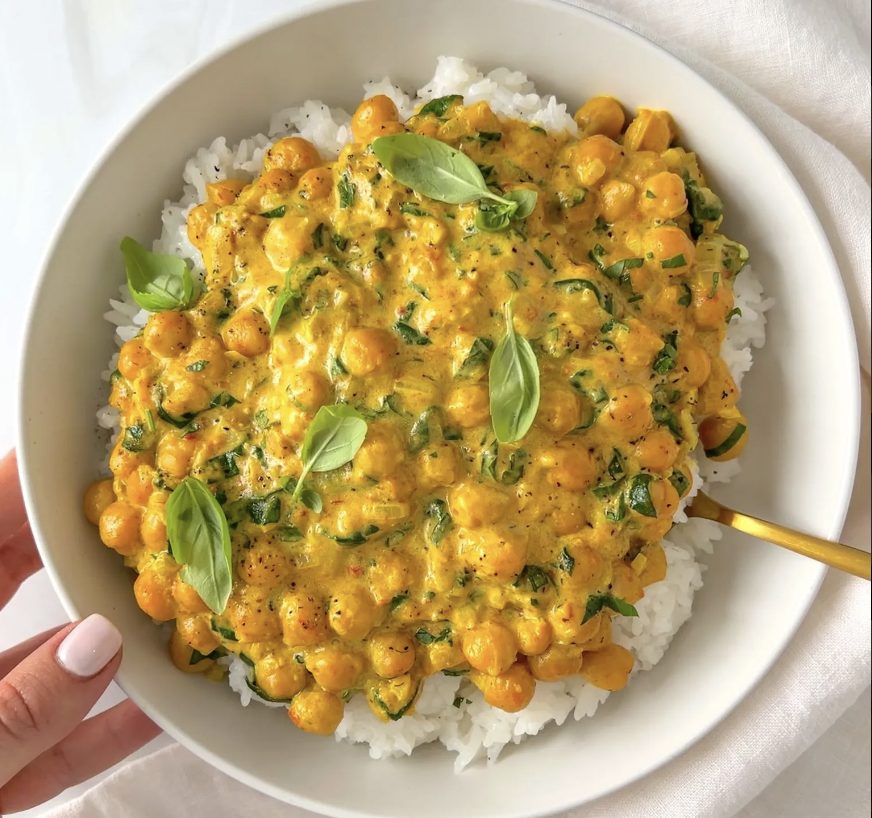

Back to all recipes
Coconut Chickpeas

It makes the perfect lunch or dinner and it can be stored in the fridge up to 3 days. It reheats beautifully so you are more than welcome to take it for work. If you do not want rice on the side you can absolutely enjoy it with naan or pita of choice or even on top of cauliflower rice as a low-carb option.
Ingredients
- 2 cups of cooked jasmine rice
- 1 tablespoon of olive oil
- 1 small finely diced onion
- 3 minced garlic cloves
- 1.5 cups cooked chickpea’s (or a 14 oz can)
- ⅓ cup tomato sauce
- 3-4 tablespoons of the cream that sits on top of a can of coconut milk
- salt and pepper to taste
- 1/2 teaspoon turmeric powder
- 1 cup finely chopped spinach (optional)
- parsley or cilantro for garnish (optional)
Recipe
- In a pan on medium-high heat start by sautéing the onion until translucent. This should take 1 to 2 minutes. Add the garlic and sauté for another 30 seconds. You do not want anything to burn.
- Add the chickpeas, tomato sauce, the cream that sits on top of a can of coconut milk and stir. Add the spices to taste and stir again. You are more than welcome to add the salt pepper and turmeric before you add the wet ingredients but in terms of taste it doesn’t make a difference to me in this dish.
- Optionally add some chopped spinach, give it a stir and take it off the heat. Garnish with parsley, cilantro, or even basil it’s totally up to you. Top it off on top of rice and enjoy.